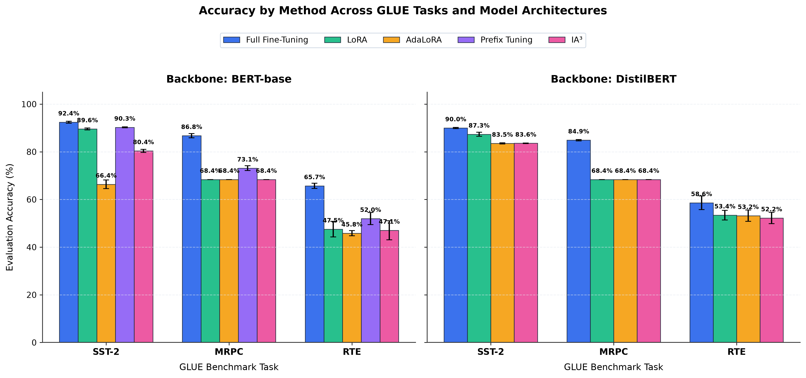
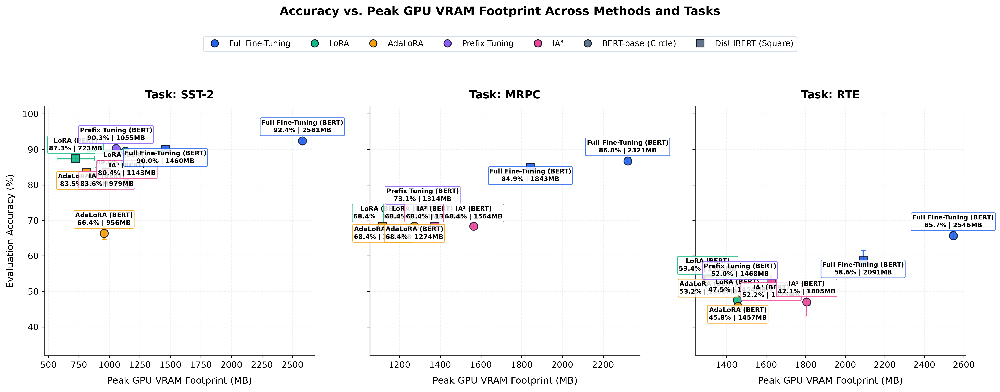
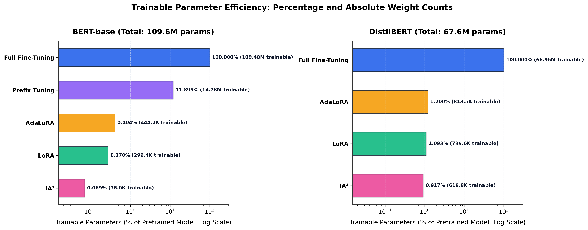
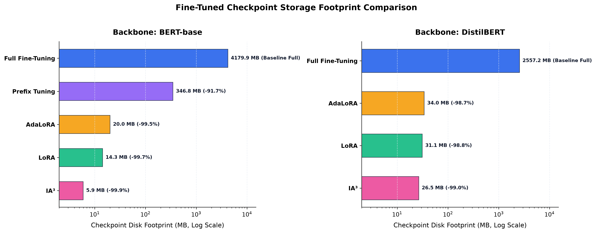
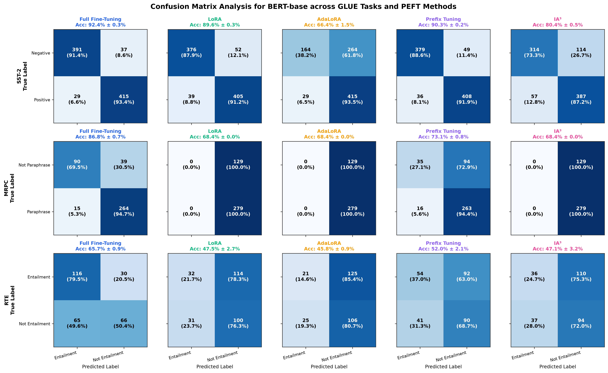
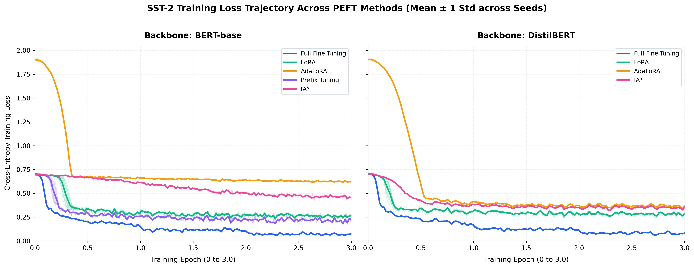
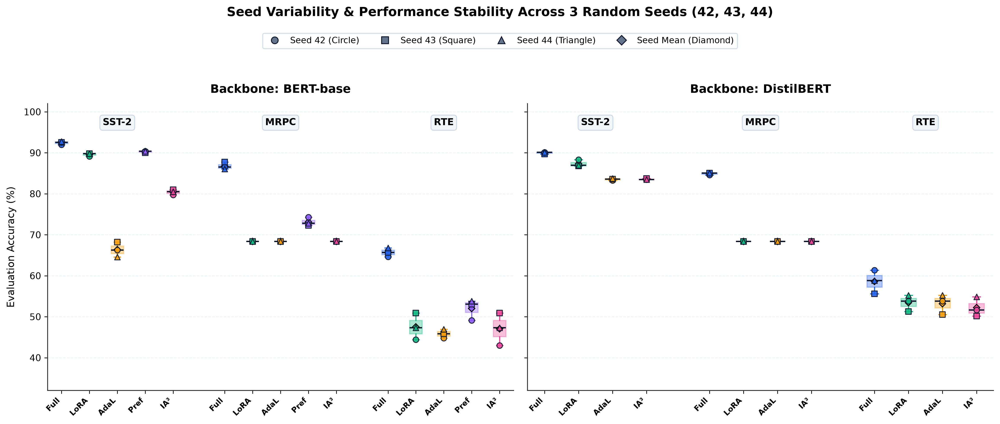

A controlled empirical benchmark comparing Full Fine-Tuning, LoRA, AdaLoRA, Prefix Tuning, and IA³ across BERT-base and DistilBERT on three GLUE tasks under identical experimental conditions.
While numerous parameter-efficient fine-tuning (PEFT) methods have been proposed to reduce the computational cost of adapting large transformer models, existing evaluations are often conducted under disparate training protocols, learning rate schedules, and batch sizes—making direct practical comparison difficult.
This benchmark was created to evaluate these methods under an identical experimental pipeline on consumer hardware, measuring both predictive performance and computational resource consumption (peak GPU VRAM, training time, parameter budget, and checkpoint disk storage).
Two encoder architectures evaluated across five distinct parameter adaptation paradigms.
All algorithms were executed on identical hardware with fixed hyperparameters to isolate the exact impact of parameter adaptation.
| Dataset | Task Type | Train Samples | Validation Samples | Primary Metric |
|---|---|---|---|---|
| SST-2 | Sentiment Classification | 67,349 | 872 | Accuracy |
| MRPC | Paraphrase Detection | 3,668 | 408 | Accuracy, F1 |
| RTE | Textual Entailment | 2,490 | 277 | Accuracy |
Evaluation accuracy, peak GPU memory footprint, fine-tuning time, trainable parameters, and checkpoint storage averaged across 3 random seeds.
| Model | Task | Method | Accuracy (μ ± σ) | Peak VRAM | Train Time | Trainable Params | Checkpoint |
|---|---|---|---|---|---|---|---|
| DistilBERT | SST-2 | Full Fine-Tuning | 0.8998 ± 0.0026 | 1459.8 MB | 782.5 s | 66,955,010 (100.00%) | 2557.44 MB |
| DistilBERT | SST-2 | LoRA | 0.8735 ± 0.0083 | 781.4 MB | 412.9 s | 739,586 (1.09%) | 31.14 MB |
| DistilBERT | SST-2 | AdaLoRA | 0.8352 ± 0.0024 | 814.2 MB | 647.9 s | 813,458 (1.20%) | 34.18 MB |
| DistilBERT | SST-2 | IA³ | 0.8356 ± 0.0013 | 979.4 MB | 587.4 s | 619,778 (0.92%) | 26.74 MB |
| DistilBERT | MRPC | Full Fine-Tuning | 0.8489 ± 0.0028 | 1843.2 MB | 86.2 s | 66,955,010 (100.00%) | 2557.23 MB |
| DistilBERT | MRPC | LoRA | 0.6838 ± 0.0000 | 1115.9 MB | 64.8 s | 739,586 (1.09%) | 31.12 MB |
| DistilBERT | MRPC | AdaLoRA | 0.6838 ± 0.0000 | 1118.6 MB | 66.8 s | 813,458 (1.20%) | 33.97 MB |
| DistilBERT | MRPC | IA³ | 0.6838 ± 0.0000 | 1374.1 MB | 64.5 s | 619,778 (0.92%) | 26.53 MB |
| DistilBERT | RTE | Full Fine-Tuning | 0.5860 ± 0.0290 | 2090.7 MB | 81.8 s | 66,955,010 (100.00%) | 2557.23 MB |
| DistilBERT | RTE | LoRA | 0.5343 ± 0.0201 | 1305.0 MB | 61.2 s | 739,586 (1.09%) | 31.11 MB |
| DistilBERT | RTE | AdaLoRA | 0.5319 ± 0.0240 | 1307.8 MB | 62.9 s | 813,458 (1.20%) | 33.96 MB |
| DistilBERT | RTE | IA³ | 0.5223 ± 0.0240 | 1625.3 MB | 61.2 s | 619,778 (0.92%) | 26.52 MB |
| BERT-base | SST-2 | Full Fine-Tuning | 0.9243 ± 0.0041 | 2580.6 MB | 1567.8 s | 109,483,778 (100.00%) | 4180.07 MB |
| BERT-base | SST-2 | LoRA | 0.8956 ± 0.0040 | 1129.6 MB | 1166.9 s | 296,450 (0.27%) | 14.49 MB |
| BERT-base | SST-2 | AdaLoRA | 0.6636 ± 0.0184 | 956.0 MB | 1061.3 s | 444,194 (0.40%) | 20.41 MB |
| BERT-base | SST-2 | Prefix Tuning | 0.9025 ± 0.0020 | 1055.1 MB | 1125.3 s | 14,781,698 (11.90%) | 347.25 MB |
| BERT-base | SST-2 | IA³ | 0.8039 ± 0.0064 | 1143.2 MB | 1022.7 s | 76,034 (0.07%) | 6.34 MB |
| BERT-base | MRPC | Full Fine-Tuning | 0.8676 ± 0.0088 | 2321.0 MB | 225.9 s | 109,483,778 (100.00%) | 4179.87 MB |
| BERT-base | MRPC | LoRA | 0.6838 ± 0.0000 | 1270.7 MB | 140.6 s | 296,450 (0.27%) | 14.29 MB |
| BERT-base | MRPC | AdaLoRA | 0.6838 ± 0.0000 | 1273.8 MB | 126.3 s | 444,194 (0.40%) | 19.99 MB |
| BERT-base | MRPC | Prefix Tuning | 0.7312 ± 0.0102 | 1314.1 MB | 123.3 s | 14,781,698 (11.90%) | 346.83 MB |
| BERT-base | MRPC | IA³ | 0.6838 ± 0.0000 | 1564.4 MB | 121.3 s | 76,034 (0.07%) | 5.92 MB |
| BERT-base | RTE | Full Fine-Tuning | 0.6570 ± 0.0108 | 2546.0 MB | 171.6 s | 109,483,778 (100.00%) | 4179.86 MB |
| BERT-base | RTE | LoRA | 0.4753 ± 0.0326 | 1454.2 MB | 125.1 s | 296,450 (0.27%) | 14.28 MB |
| BERT-base | RTE | AdaLoRA | 0.4585 ± 0.0108 | 1457.5 MB | 131.3 s | 444,194 (0.40%) | 19.98 MB |
| BERT-base | RTE | Prefix Tuning | 0.5199 ± 0.0253 | 1468.2 MB | 127.4 s | 14,781,698 (11.90%) | 346.82 MB |
| BERT-base | RTE | IA³ | 0.4705 ± 0.0398 | 1805.1 MB | 129.3 s | 76,034 (0.07%) | 5.91 MB |

Parameter efficiency, memory reduction, training speed, and checkpoint storage are distinct objectives that do not scale identically.
On SST-2 sentiment classification, LoRA retains ~97% of Full Fine-Tuning accuracy while drastically lowering hardware barriers:
| Metric (BERT / SST-2) | Full Fine-Tuning | LoRA | Relative Savings |
|---|---|---|---|
| Accuracy | 92.43% | 89.56% | -2.87% diff |
| Peak GPU VRAM | 2580.6 MB | 1129.6 MB | -56.2% VRAM |
| Training Duration | 1567.8 s | 1166.9 s | -25.6% time |
| Trainable Parameters | 109,483,778 (100%) | 296,450 (0.27%) | -99.73% params |
| Checkpoint Size | 4180.1 MB | 14.49 MB | -99.65% storage |

IA³ is the most parameter-efficient method evaluated, tuning only 76,034 parameters (~0.07%) on BERT-base with a 6.3 MB checkpoint. However, on SST-2 its accuracy dropped to 80.39%, demonstrating that aggressive parameter minimization can induce an accuracy penalty.


Controlled benchmarking reveals critical edge cases where parameter-efficient methods fail under uniform training recipes.

AdaLoRA achieved an unexpectedly low 66.36 ± 1.84% accuracy on BERT/SST-2 despite its training loss steadily decreasing from 1.90 to 0.61 across epochs.
Inspection of predictions revealed strong class imbalance in its output probabilities (predicting the positive class with disproportionate confidence). This provides an important empirical lesson: consistent loss reduction does not guarantee balanced decision boundary convergence.

Nine targeted runs (DistilBERT + Prefix Tuning across SST-2, MRPC, RTE for seeds 42–44) were skipped and recorded as N/A due to an architectural constraint: DistilBERT does not expose past-key-value cache arguments required by Prefix Tuning in the tested Transformers release.
Choosing an adaptation method depends on hardware constraints, storage limits, and task characteristics.
| Priority / Constraint | Observed in Benchmark | Practical Recommendation |
|---|---|---|
| Highest accuracy in this benchmark | Full Fine-Tuning achieved highest accuracy (92.4% SST-2, 86.8% MRPC, 65.7% RTE) as the reference baseline. | Use Full Fine-Tuning when GPU VRAM and checkpoint storage are unconstrained. |
| Best accuracy/resource trade-off | LoRA achieved 89.56% on BERT/SST-2 and 87.35% on DistilBERT with ~35%–56% VRAM reduction. | LoRA provides the most reliable general-purpose balance between resource savings and accuracy. |
| High accuracy with fixed VRAM | Prefix Tuning reached 90.25% on BERT/SST-2 and resisted MRPC collapse better (73.12%). | Consider Prefix Tuning for encoder backbones when higher parameter capacity (~11.9%) is acceptable. |
| Highest parameter efficiency | IA³ tuned only 76,034 params (~0.07%) with a 6.3 MB checkpoint, but accuracy dropped to 80.39% on SST-2. | Use IA³ when checkpoint size is the primary constraint and moderate accuracy loss is acceptable. |
| Small / Imbalanced Datasets | Low-parameter adapters collapsed to predicting the majority class on MRPC (68.38%) under fixed learning rates. | Always validate PEFT decision boundaries on small datasets rather than assuming hyperparameter transferability. |
